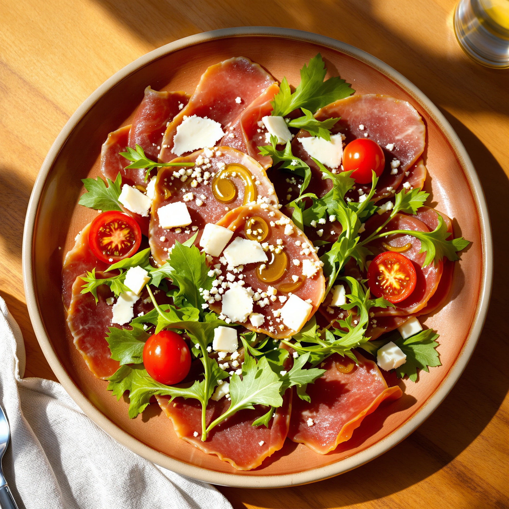
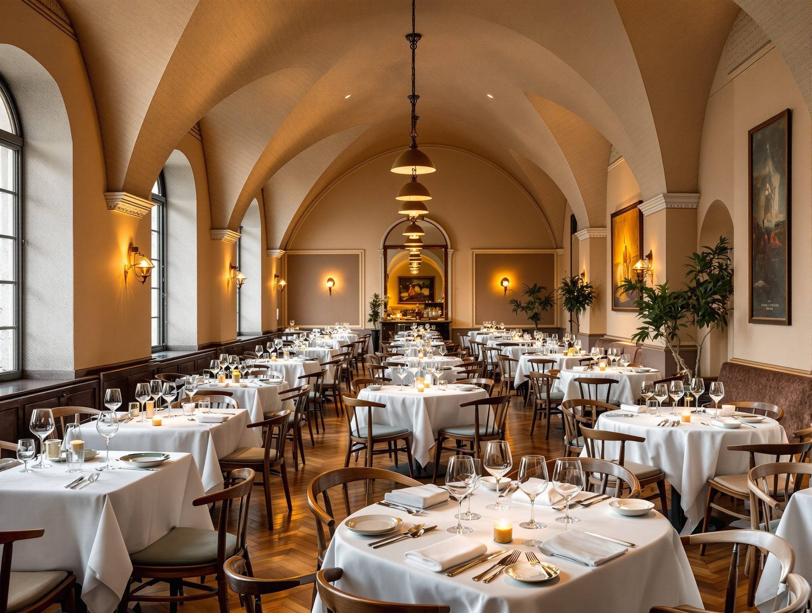
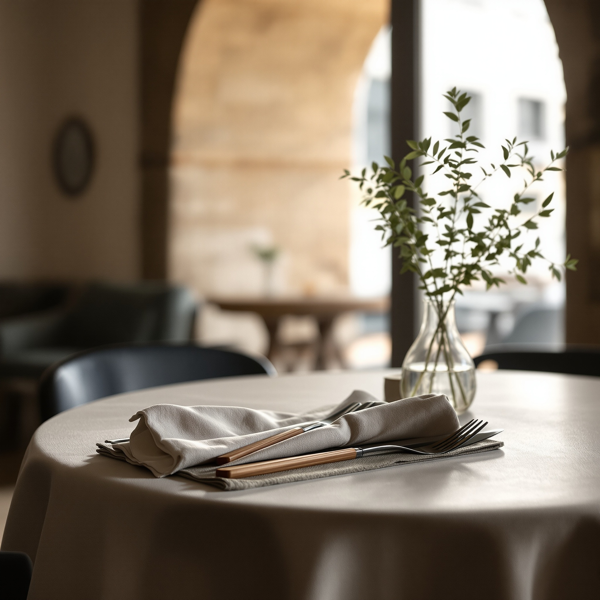
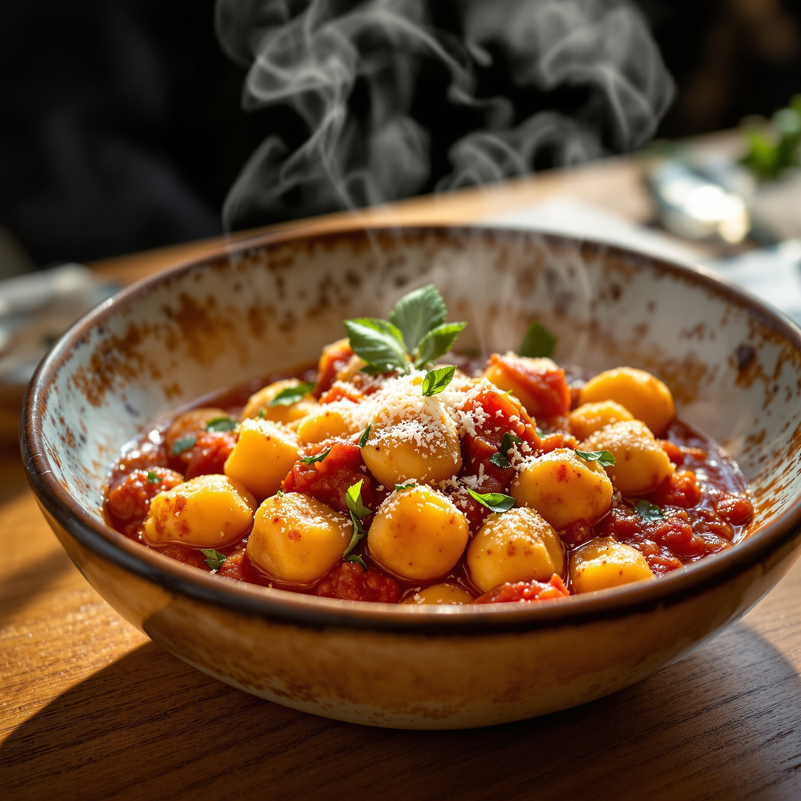
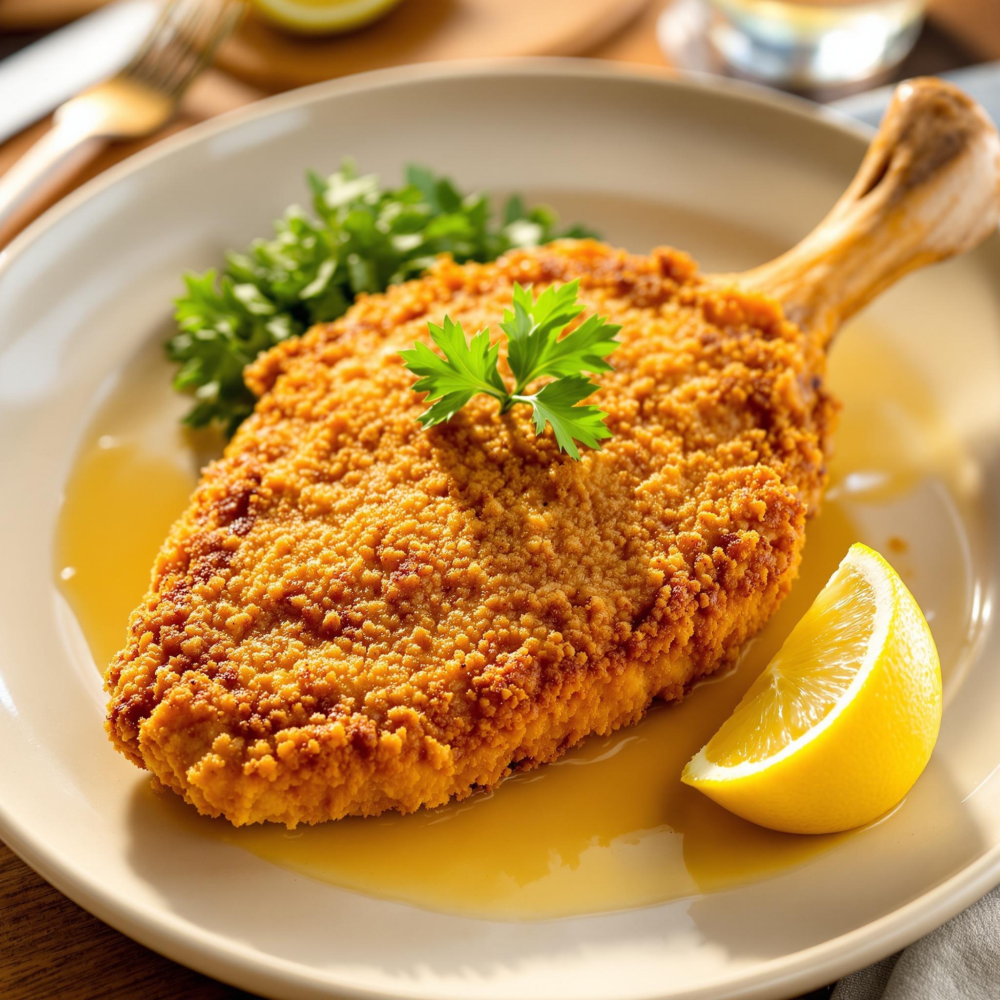
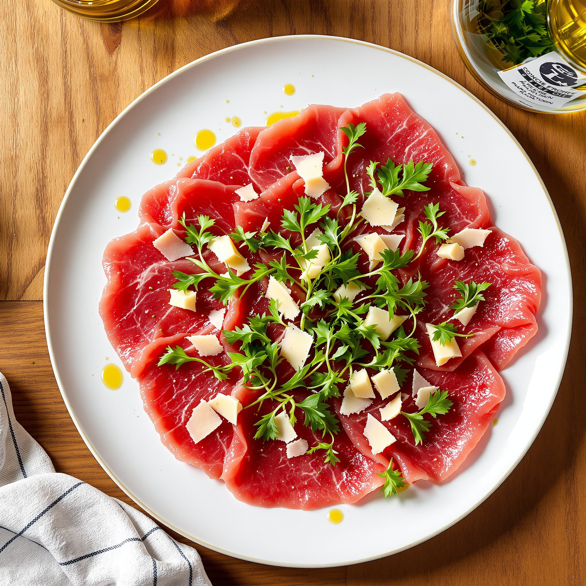
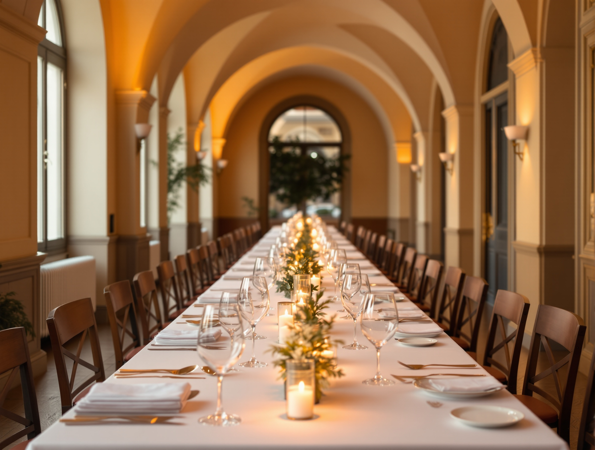
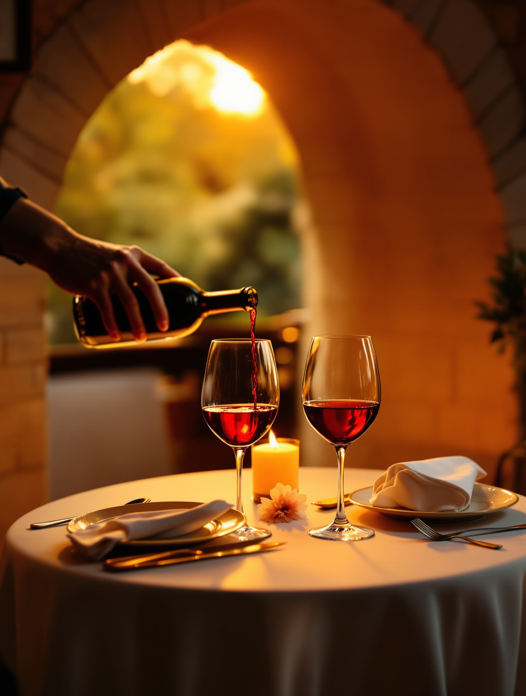
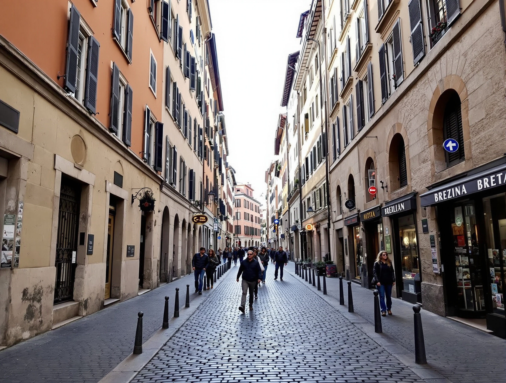

Antipasto Volta
Bresaola della Valtellina, rucola, scaglie di grana e pomodorini, filo d'olio.
Ristorante · Brera, Milano
Cucina della tradizione italiana, sotto le volte originali della sala. Cinquantacinque coperti a due passi da Brera e Corso Como.
4,6 su 436 recensioni


La Sala
Abbiamo ristrutturato questo spazio rispettandone le forme architettoniche originali: le volte e gli archi che danno il nome al ristorante.
Cinquantacinque coperti soltanto. Arredi di design che incontrano la pietra e il legno. Una sala pensata per farvi sentire a vostro agio, mai anonima.
La Cucina della Tradizione
La nostra idea è semplice: piatti che conoscete, fatti bene, con materie prime che scegliamo una a una.
Non inseguiamo le mode. Lavoriamo la carne, la pasta fresca e le verdure di stagione come si fa a casa, con la cura di una sala di design.
I Piatti
Una selezione dalla nostra carta. Il menu completo cambia con la stagione e ve lo raccontiamo in sala.

Bresaola della Valtellina, rucola, scaglie di grana e pomodorini, filo d'olio.

Gnocchi di patate fatti in casa, salsa di pomodoro e basilico, formaggio grattugiato.

Costoletta di vitello impanata e dorata, spicchio di limone e rucola.

Manzo tagliato sottile, rucola pepata, scaglie di grana e un filo d'olio.
Le Occasioni
La stessa cura, per una cena di lavoro o per una serata solo vostra.

Un tavolo lungo sotto le volte, il servizio calibrato sui vostri tempi. Riservate la sala per il team o per i clienti e lasciate a noi il resto.

Un angolo raccolto per due, o per una ricorrenza da ricordare. Ditecelo quando prenotate e prepariamo il tavolo giusto.

Nel Cuore di Brera
Ci trovate tra Brera, Corso Garibaldi e Corso Como, nel cuore della Milano che cammina la sera.
Via Alessandro Volta 3Fermata Moscova, linea verde MM2 — pochi minuti a piedi.
Apri in Google MapsDal 2011
436 recensioni, e una media che resta alta negli anni.
Chi torna lo fa per la stessa ragione: piatti della tradizione fatti come si deve, in una sala di carattere. È la conferma più onesta del nostro lavoro — nessuna recensione inventata, solo il giudizio di chi si è seduto ai nostri tavoli.
Prenota